Task: DeepLabCut finds 8 points on every frame of a mouse-eye video: pupil top, bottom, left, right; upper and lower eyelid; nasal and temporal eye corner. From these we get pupil size, eye opening and blinks, to be aligned with brain recordings later.
Main question: On a new video, how many frames must a person label before the model is good enough?
The work has two phases, which differ in how the pupil-top point is labeled. Error numbers of the two phases cannot be compared directly.
Conclusions of phase 1 (steps 1–6)
Premise: pupil top is placed at the highest point of the visible pupil, the part not hidden by the eyelid.
Which batch size? 2 (step 1).
Which model? ResNet-50 (step 2).
How many labels are enough within one video? About 80 saturate it; from 80 to 300 labels the error does not change (step 3, done only on the 5-minute video of the first mouse).
Which error-correction algorithm picks the frames to label next? jump. The three algorithms show no clear gap; jump is slightly ahead (step 3).
How do the predictions reveal blinks and failures? Plotting the model's prediction of every frame over time shows three kinds of events without any human labels: blinks, eye movements, and the model losing the points (step 4).
How to compute the pupil area? Under this standard the top point sits on the lid, so only left, right and bottom are used (step 5).
The logic in between: why ResNet-50 and batch 2 were kept after the standard changed
From 2026-09-20 the way the four pupil points are labeled was made explicit: the pupil is treated as an ellipse and the four points are its four endpoints. Only the definition of pupil top really changed: from "the highest point of the visible pupil" to "the true top of the ellipse". Pupil bottom, left and right were already placed on the pupil edge and were made explicit as ellipse endpoints, moving by about 14 px. On the same day the placement of the two corners was made explicit as well (the crossing of the continued upper and lower eyelid margins, on the outer side): the corners moved outwards by 40–56 px, the upper-eyelid point moved up by about 17 px with them, and the lower-eyelid point did not move. Details in step 7. The images, the task and the training procedure did not change. The choice of batch size and model depends on the images and the training procedure, not on where the points are placed, so we consider both choices unaffected and keep ResNet-50 with batch 2. This is a judgment; batch size and model were not compared again under the new standard.
Conclusions of phase 2 (steps 7–11)
Premise: the pupil is treated as an ellipse and pupil top is placed at the true top of that ellipse; where the eyelid hides it, the labeler estimates its position from the ellipse.
How many labels are enough within one video? Consistent with "about 80 saturate" from phase 1: the same 5-minute video redone under the new standard gives 12.9 / 13.0 / 12.0 / 13.1 / 12.3 px at 20 / 40 / 60 / 80 / 100 labels, with no decrease; and no later video has a plateau point above 80 labels (step 8).
What about a new mouse? It needs its own labels, and 20 of them reach about 10 px. Second mouse (the model had seen one mouse): 208 px at 0 labels, 10.4 px at 20. Third mouse (the model had seen two mice): 26 px at 0 labels, 9.2 px at 20. The second time the mouse changed, the starting error without any labels was far smaller (step 8).
How many labels does each later video of the same mouse need? 0–40 reach the plateau; 1 of the 9 finished ones needed 80 (step 8).
Are 5 or 10 labels enough? Not on most videos; 20 is the smallest batch that worked on every video (step 9).
Do new videos make old ones worse? No (step 10).
How to compute the pupil area? Under the new standard all four points are ellipse endpoints, and the 4-point area has about half the error of the 3-point rule (step 11).
Status: 11 videos finished (videos 0–10); video 11 in progress, error at 0 / 20 / 40 / … labels: 25.96 / 9.24 / 8.86 px.
Each video has a set of human-labeled test frames that are never used for training or for any choice. For every test frame the model gives the coordinates of the 8 points, in pixels of the original video frame (928 × 736, no rescaling). Every predicted point enters the calculation, none is dropped for low confidence; points the person did not label (for example the pupil points of a closed-eye frame) are left out.
Error of one point: for point k of frame i, with prediction (x̂ik, ŷik) and human label (xik, yik), the error is the straight-line distance between the two: eik = √[(x̂ik − xik)² + (ŷik − yik)²]
Median frame RMSE (the main metric from step 3 on): first the root mean square of the point errors within each frame, RMSEi = √[(1 / Ki) · Σk eik²], where Ki is the number of labeled points in that frame (at most 8); then the median of RMSEi over all test frames.
RMSE over all keypoints (used in steps 1 and 2): one root mean square over the errors of all points of all test frames, RMSE = √[(1 / N) · Σi,k eik²], where N is the total number of labeled points (100 frames × 8 points, at most 800). A few points that are far off pull it up, which is why the median frame RMSE was used later.
The other numbers: "90th percentile" is the 90th percentile of RMSEi; "test frames above 50 px" is the share of frames with RMSEi > 50; "points with confidence ≥ 0.6" is the share of labeled points whose model confidence is at least 0.6.
Lower is better. For scale: the eye is about 320–390 px wide, so 10 px is about 3% of the eye width. The scoring scripts are in the repository: v1_old_pupil_top/batch-size-selection/scripts/evaluate_eye_test_set.py and the script of the same name under model-selection/scripts/ for steps 1 and 2, active-learning-jump-selection/scripts/round_train_pipeline.py for step 3, new-video-generalization/scripts/scale_step.py for step 6, and v2_new_pupil_top_video_scaling/scripts/scale_step.py from step 8 on; every score is written to the csv tables of the results/ folders. The video, data, model and metric of every step are listed in the "Basic information" table at its start.
Training recipe (chosen in steps 1 and 2, used in both phases): ResNet-50, batch 2. Every model is trained anew from ImageNet-pretrained weights; it never continues from one of our earlier models.
1选 batch size：batch 2Batch size: batch 2
基本信息Basic information
视频Video
第一只老鼠的 5 分钟眼睛视频（60 帧/秒，共 18,000 帧）。前 4 分钟用于挑帧和训练，最后 1 分钟只用于测试。The 5-minute eye video of the first mouse (60 fps, 18,000 frames). The first 4 minutes are used for frame selection and training, the final minute for testing only.
标注标准Label standard
第一阶段（瞳孔上点标在看得见的瞳孔的最高处）。Phase 1 (pupil top at the highest point of the visible pupil).
训练数据Training data
前 4 分钟里人工标注的 100 帧：最初 20 帧按画面外观聚类（k-means）挑选，其余 80 帧按时间顺序补充。按时间先后排序，最早的 80 帧（0–33 秒）用于训练。100 hand-labeled frames from the first 4 minutes: the first 20 picked by clustering image appearance (k-means), the other 80 added in time order. Sorted by time, the earliest 80 (0–33 s) are the training set.
验证数据Validation data
同一批 100 帧里时间最晚的 20 帧（34–236 秒），与训练帧相隔 1.2 秒以上。用来选 batch size。The latest 20 of the same 100 frames (34–236 s), at least 1.2 s away from the training frames. Used to choose the batch size.
测试数据Test data
最后 1 分钟里按时间均匀取 100 帧，人工标注 8 个点。只用来报告成绩，不参与训练，也不参与任何选择。100 frames evenly spaced in time over the final minute, all 8 points labeled by hand. Used only to report the score, never for training or for any choice.
模型和配置Model and settings
HRNet-W32（当时使用的模型），从 ImageNet 预训练权重开始训练 100 轮，CPU；学习率在第 80、95 轮下降；每个 batch size 训练一次；取内部验证 mAP 最高的那次存档来打分。HRNet-W32 (the model in use at that time), trained for 100 epochs from ImageNet-pretrained weights on CPU; learning rate drops at epochs 80 and 95; one run per batch size; the snapshot with the best internal validation mAP is scored.
指标Metric
测试帧上全部关键点合在一起的 RMSE（像素）：RMSE = √[(1 / N) · Σ e²]，e 是每个点预测位置与人工标注位置的直线距离，N 是 100 帧里人标了的点的总数（最多 800）。完整算法见页面开头“指标怎么算”。这一步和第 2 步用这个指标，第 3 步起用中位帧 RMSE。RMSE over all keypoints of all test frames (pixels): RMSE = √[(1 / N) · Σ e²], where e is the straight-line distance between the predicted and the human position of a point and N is the number of labeled points in the 100 frames (at most 800). The full calculation is under "How the metrics are computed" at the top. This step and step 2 use this metric; from step 3 on the median frame RMSE is used.
What was done:With the reviewed labels (first 80 frames train, last 20 validate), one run each at batch 2, 4, 8, 16 (100 epochs). The selection rule was fixed before looking at results: lowest internal validation loss. The final-minute test frames are report-only.
怎么看：右上：内部验证损失，batch 2 最低（星号）。左上：测试集误差，蓝线在 batch 2 也最低（21.07 px）。右下：把两者画在一起，batch 2 在左下角，两个信号一致。左下：置信度 ≥ 0.6 的点的比例，batch 越大越低。How to read:Top right: internal validation loss, lowest at batch 2 (star). Top left: test error, the blue line is also lowest at batch 2 (21.07 px). Bottom right: both together, batch 2 sits in the lower-left corner, so the two signals agree. Bottom left: share of points with confidence ≥ 0.6 falls as the batch grows.
Conclusion:Batch 2. The internal validation set and the independent test set pick the same batch, which shows the enlarged validation set can be trusted. One run per batch; the differences between batches are small (21.1–23.6 px).
2选模型：ResNet-50Backbone: ResNet-50
基本信息Basic information
视频Video
第一只老鼠的 5 分钟眼睛视频（60 帧/秒，共 18,000 帧）。前 4 分钟用于挑帧和训练，最后 1 分钟只用于测试。The 5-minute eye video of the first mouse (60 fps, 18,000 frames). The first 4 minutes are used for frame selection and training, the final minute for testing only.
标注标准Label standard
第一阶段（瞳孔上点标在看得见的瞳孔的最高处）。Phase 1 (pupil top at the highest point of the visible pupil).
训练数据Training data
与第 1 步相同：最早的 80 帧训练。Same as step 1: the earliest 80 frames.
验证数据Validation data
与第 1 步相同：最晚的 20 帧。用来选模型。Same as step 1: the latest 20 frames. Used to choose the model.
测试数据Test data
最后 1 分钟里按时间均匀取 100 帧，人工标注 8 个点。只用来报告成绩，不参与训练，也不参与任何选择。100 frames evenly spaced in time over the final minute, all 8 points labeled by hand. Used only to report the score, never for training or for any choice.
模型和配置Model and settings
5 种模型（ResNet-50、HRNet-W18、HRNet-W32、HRNet-W48、CSPNeXt-S），batch 2，各训练 100 轮，CPU，其余设置与第 1 步相同，每种训练一次。Five models (ResNet-50, HRNet-W18, HRNet-W32, HRNet-W48, CSPNeXt-S), batch 2, 100 epochs each on CPU, other settings as in step 1, one run each.
指标Metric
与第 1 步相同：全部关键点合在一起的 RMSE。Same as step 1: RMSE over all keypoints.
What was done:Same data and settings (batch 2, 100 epochs), five backbones: ResNet-50, HRNet-W18 / W32 / W48, CSPNeXt-S.
怎么看：左上：测试集误差，ResNet-50 最低（20.1 px），HRNet-W32 接近（21.1 px）。右上：内部验证损失，5 个模型只差 1.4%，分不出高下。左下：置信度 ≥ 0.6 的点，ResNet-50 最多（800 个点里 514 个）。右下：训练时间对误差，ResNet-50 用时 1.7 小时，在左下角（误差低，用时短；只有误差高得多的 CSPNeXt-S 比它快）。How to read:Top left: test error, ResNet-50 lowest (20.1 px), HRNet-W32 close (21.1 px). Top right: internal validation loss, the five models differ by only 1.4% and cannot be separated. Bottom left: points with confidence ≥ 0.6, ResNet-50 has the most (514 of 800). Bottom right: training time vs error, ResNet-50 takes 1.7 h and sits in the lower-left corner (low error, short time; only CSPNeXt-S, with a much higher error, is faster).
Conclusion:Taking everything together, ResNet-50. (1) Lowest test error: 20.1 px. (2) The validation losses of the five models are close, within 1.4%. (3) Best use of confidence: 514 of 800 points have confidence ≥ 0.6, against 75–375 for the other models; this helps when confidence is used later to detect blinks and tracking loss. (4) Low training cost: 1.7 h, against 3.7 h for HRNet-W32, the model with a similar error. All later experiments use ResNet-50 with batch 2.
第一只老鼠的 5 分钟眼睛视频（60 帧/秒，共 18,000 帧）。前 4 分钟用于挑帧和训练，最后 1 分钟只用于测试。The 5-minute eye video of the first mouse (60 fps, 18,000 frames). The first 4 minutes are used for frame selection and training, the final minute for testing only.
标注标准Label standard
第一阶段。第 6 轮起眨眼帧的眼睑也要标。Phase 1. From round 6 on, the eyelids are labeled in blink frames too.
训练数据Training data
起点是第 1 步的 80 帧。每一轮：模型预测前 4 分钟的全部 14,400 帧，由找帧算法标出可疑帧，再按画面外观聚类从中挑 20 帧，人工改正全部 8 个点后加入训练集。三种算法各自独立累加，11 轮后每条线 300 帧。Starts from the 80 frames of step 1. Each round the model predicts all 14,400 frames of the first 4 minutes, the detector flags suspicious frames, 20 of them are picked by clustering image appearance, all 8 points are corrected by hand and the frames are added to the training set. The three detectors accumulate independently; after 11 rounds each branch has 300 frames.
验证数据Validation data
第 1 步的 20 帧，始终不变。The 20 frames of step 1, never changed.
测试数据Test data
最后 1 分钟里按时间均匀取 100 帧，人工标注 8 个点。只用来报告成绩，不参与训练，也不参与任何选择。100 frames evenly spaced in time over the final minute, all 8 points labeled by hand. Used only to report the score, never for training or for any choice.
模型和配置Model and settings
ResNet-50，batch 2，100 轮，学习率在第 80、95 轮下降，Apple 芯片 GPU（MPS）训练。每一轮都从 ImageNet 预训练权重重新训练。图中每个点是内部验证 mAP 最高的存档，只训练一次。ResNet-50, batch 2, 100 epochs, learning rate drops at epochs 80 and 95, trained on the Apple GPU (MPS). Every round is trained anew from ImageNet-pretrained weights. Each point in the figure is the snapshot with the best internal validation mAP, from a single run.
指标Metric
中位帧 RMSE：对每一帧算 8 个点的 RMSE，再取 100 帧的中位数。Median frame RMSE: the RMSE over the 8 points of each frame, then the median over the 100 frames.
What was done:The aim is to choose an error-correction algorithm: once a model is trained, an algorithm searches the video for frames where the model is probably wrong, a person corrects only those frames, and the model is retrained. This procedure is called active learning. Three algorithms were compared to see whose picks reduce the error most. Procedure: starting from 80 labels, each round the algorithm picks frames, a person corrects 20 of them, they are added and the model is retrained. Three detectors ran as three branches: low confidence (uncertain), keypoints jumping between consecutive frames (jump), deviation from a smooth trajectory (fitting). 11 rounds, each branch from 80 to 300 labels.
怎么看：横轴是累计训练帧数，三种颜色是三种算法。中间一幅是主要指标（中位帧 RMSE）：三条线一直在 15.7–17.5 px 之间上下波动，没有下降趋势；红线（jump）多数时候略低；注意这幅图的纵轴只跨 2 px。左边一幅是均值，会被几帧严重错误拉高（蓝线在 120–140 帧的尖峰就是几帧眨眼造成的）。How to read:x = cumulative training frames, the three colours are the three detectors. The middle panel is the primary metric (median frame RMSE): all three lines wander between 15.7 and 17.5 px with no downward trend; the red line (jump) is slightly lower most of the time; note that its y axis spans only 2 px. The left panel is the mean, which a few badly wrong frames pull up (the blue spike at 120–140 frames comes from a few blink frames).
Conclusion:jump is chosen as the error-correction algorithm and picks the frames in all later experiments. The three detectors show no clear gap, with jump slightly ahead: the mean of the median error over the 11 rounds is 16.4 px for jump, 17.0 px for uncertain and 17.0 px for fitting, and jump is the lowest in 8 of the 11 rounds; but the gap is only about 0.6 px, smaller than the run-to-run variation of one setting, so jump cannot be called truly better. The step gave a second result as well: on this video (phase-1 label standard) about 80 labels already saturate, and 300 labels give the same error. Redone on the same video under the new standard, the result is the same (step 8, video 0: 12–13 px anywhere from 20 to 100 labels). Correction on record: a "drop" reported at round 6 was traced to a change of error formula mid-series and was retracted (2026-09-18); this figure is recomputed with one formula. Rule since then: one metric, one script, one formula.
4时间序列：不用标注就能分出眨眼、眼动和追踪丢失Time series: blinks, eye movements and tracking loss without labels
基本信息Basic information
视频Video
同一个 5 分钟视频的前 4 分钟，全部 14,400 帧。The first 4 minutes of the same 5-minute video, all 14,400 frames.
标注标准Label standard
第一阶段。这一步不使用任何人工标注。Phase 1. No human labels are used in this step.
模型和配置Model and settings
第 3 步 jump 那条线第 10 轮的模型（ResNet-50，280 帧训练）。The round-10 model of the jump branch of step 3 (ResNet-50, 280 training frames).
数据Data
模型对每一帧的预测。由 8 个点算出瞳孔中心、眼睛睁开高度（上下眼睑两点的距离）、瞳孔面积和瞳孔点的最低置信度。偏离 1 秒滚动中位数超过 5 倍稳健标准差的帧标为异常。The model's prediction of every frame. From the 8 points: pupil centre, eye opening (distance between the two eyelid points), pupil area and the lowest confidence of the pupil points. Frames more than 5 robust deviations away from a 1-second rolling median are marked as anomalies.
What was done:The model predicted every frame of the first 4 minutes (14,400 frames, 60 fps). Pupil-centre position, eye opening, pupil area and confidence were plotted over time; frames far from a 1-second rolling median are marked as anomalies (red dots). Each large anomaly was then checked in the video.
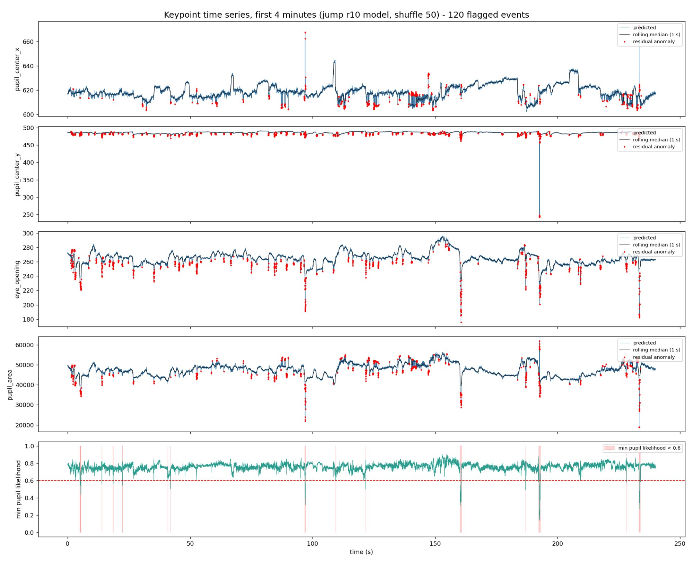
怎么看：从上到下：瞳孔中心 x、瞳孔中心 y、眼睛睁开高度、瞳孔面积、瞳孔点的最低置信度。看约 97、160、193、233 秒这几处：睁开高度和面积同时向下掉，置信度同时跌破 0.6（红色虚线），三个信号同时出现就是眨眼。第一行里平台状的台阶（如约 109 秒）是眼睛转动。第二行 193 秒处一下跳了 250 px，是模型把点放到了很远的错误位置（追踪丢失）。How to read:Top to bottom: pupil-centre x, pupil-centre y, eye opening, pupil area, lowest confidence of the pupil points. At about 97, 160, 193 and 233 s the opening and the area dip together and the confidence falls below 0.6 (red dashed line): three signals at once mean a blink. The square steps in the first row (e.g. about 109 s) are eye movements. The 250 px jump in the second row at 193 s is the model placing points far away (tracking loss).
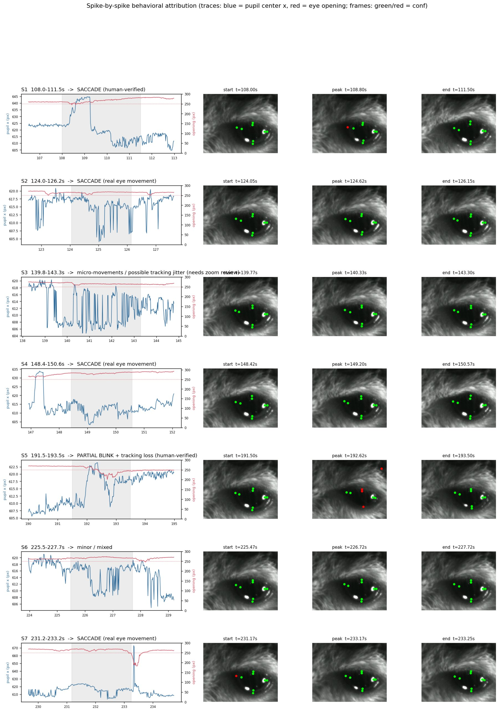
怎么看：每一行是一个异常：左边是放大的曲线（蓝 = 瞳孔中心 x，红 = 睁开高度），右边是开始、最大、结束三个时刻的视频帧（绿点 = 置信度高，红点 = 置信度低）。S1：蓝线跳起并保持约 1 秒，红线不动，眼睛一直睁着，是真实的眼动（saccade）。S5：红线下降，同时出现红点，是半眨眼加追踪丢失。How to read:One anomaly per row: zoomed traces on the left (blue = pupil-centre x, red = eye opening), video frames at start, peak and end on the right (green dots = high confidence, red = low). S1: blue jumps and holds for about 1 s while red stays flat and the eye stays open, a real saccade. S5: red dips and red dots appear, a partial blink plus tracking loss.
Conclusion:The three kinds of events separate like this: blink = opening and area drop together; eye movement = centre moves while the opening stays; tracking loss = low confidence and points jumping far. Confidence is a secondary signal only and is not evidence of a blink by itself.
5瞳孔面积怎么算（旧标注标准）：用左、右、下三个点Pupil area (old label standard): from the left, right and bottom points
基本信息Basic information
视频Video
第一只老鼠的 5 分钟眼睛视频（60 帧/秒，共 18,000 帧）。前 4 分钟用于挑帧和训练，最后 1 分钟只用于测试。The 5-minute eye video of the first mouse (60 fps, 18,000 frames). The first 4 minutes are used for frame selection and training, the final minute for testing only.
标注标准Label standard
第一阶段（瞳孔上点标在看得见的瞳孔的最高处）。Phase 1 (pupil top at the highest point of the visible pupil).
数据Data
时间曲线用第 3 步模型对前 4 分钟 14,400 帧的预测；准确度用最后 1 分钟的 100 帧测试帧，把同一种算法分别用在模型预测的点和人工标注的点上，比较两者的面积和中心。The traces use the predictions of the step-3 model on the 14,400 frames of the first 4 minutes; accuracy is measured on the 100 test frames of the final minute by applying the same rule to the predicted points and to the human points and comparing area and centre.
指标Metric
面积误差（%）和中心误差（像素）的中位数与第 90 百分位数。Median and 90th percentile of the area error (%) and of the centre error (pixels).
What was done:Under the label standard of that time the pupil-top point was placed at the top of the visible pupil; the upper pupil edge is often hidden by the lid, so the top point really sat on the lid. Two rules were compared: a 4-point ellipse (all four points) and a 3-point ellipse (left and right give centre and width, bottom gives the half-height, top unused). Blink handling was added: frames during a blink are marked untrusted and the area is interpolated across them.
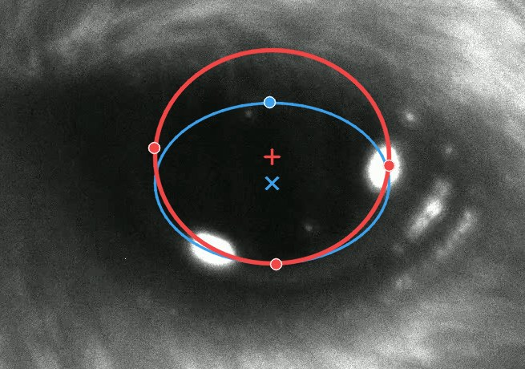
怎么看：同一帧上的两种椭圆。蓝色 = 四点椭圆，上边界被眼睑截短。红色 = 三点椭圆，由左、右、下三点推出整个瞳孔，包括被眼睑挡住的部分。How to read:Both ellipses on one frame. Blue = 4-point ellipse, cut short at the lid. Red = 3-point ellipse, the whole pupil inferred from left, right and bottom, including the part under the lid.
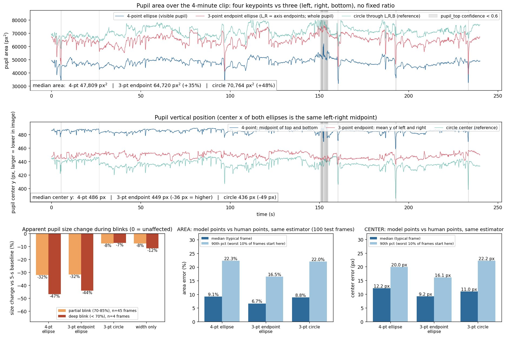
怎么看：上图：4 分钟内的瞳孔面积，红线（三点）比蓝线（四点）大 35%，因为把被挡住的部分算进去了。下排中间：与人工标注相比的面积误差，三点椭圆中位数 6.7%，四点椭圆 9.1%。下排右边：中心位置误差，三点 9.2 px，四点 12.2 px。下排左边：眨眼时面积看起来缩小多少，两种椭圆都缩小 30–47%，说明眨眼期间的面积不能直接用。How to read:Top: pupil area over the 4 minutes, the red line (3-point) is 35% above the blue line (4-point) because it includes the hidden part. Bottom middle: area error against human labels, median 6.7% for the 3-point ellipse and 9.1% for the 4-point one. Bottom right: centre error, 9.2 px vs 12.2 px. Bottom left: apparent shrinkage during blinks, 30–47% for both ellipses, so the area during a blink cannot be used as it is.
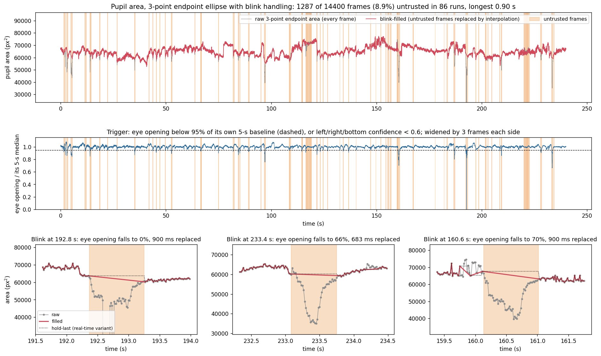
怎么看：上图：灰线是原始面积，红线是处理后的面积，橙色竖条是标为不可信的帧（共 8.9%）。下排是三次眨眼的放大：灰线在眨眼时掉下去，红线用直线跨过去。How to read:Top: grey = raw area, red = area after blink handling, orange bars = frames marked untrusted (8.9% in total). Bottom: three blinks enlarged; grey drops during the blink, red bridges it with a straight line.
Conclusion:Under the old label standard the 3-point ellipse was more accurate, so the area script used it together with blink interpolation. This changes after the label standard of step 7; see step 11.
6换一只新老鼠：旧模型不能用，标 20 帧就恢复A new mouse: the old model fails, 20 labels recover it
基本信息Basic information
视频Video
第二只老鼠 Pluto，2025-10-31 的一段 19.9 分钟视频（60 帧/秒，71,748 帧）。Second mouse, Pluto, a 19.9-minute video of 2025-10-31 (60 fps, 71,748 frames).
标注标准Label standard
第一阶段。Phase 1.
训练数据Training data
第一只老鼠已审核的全部 676 帧，加上 Pluto 视频里逐批标注的帧（每批 20 帧，从视频前 80% 里挑）。All 676 reviewed frames of the first mouse plus the Pluto frames labeled batch by batch (20 per batch, picked from the first 80% of the video).
验证数据Validation data
视频第 80%–90% 的部分，与前后各隔 2 秒。The part between 80% and 90% of the video, with 2-second guards on both sides.
测试数据Test data
视频最后 10% 里均匀取的帧，按时间顺序标了前 59 帧后冻结。只用来报告成绩。Frames evenly spaced over the final 10% of the video; the first 59 in time order were labeled and then frozen. Used only to report the score.
模型和配置Model and settings
ResNet-50，batch 2，100 轮，学习率在第 80、95 轮下降，每一步都从 ImageNet 预训练权重重新训练。0 帧那个点是第 3 步结束后合并训练出的模型直接使用。成绩取最后一轮的存档。ResNet-50, batch 2, 100 epochs, learning rate drops at epochs 80 and 95, every step trained anew from ImageNet-pretrained weights. The 0-label point is the merged model from the end of step 3 applied unchanged. The final snapshot is scored.
指标Metric
59 帧测试帧上的中位帧 RMSE。Median frame RMSE on the 59 test frames.
What was done:A 20-minute video of a second mouse (Pluto). First the model trained only on the first mouse was applied unchanged (0 labels), then 20 Pluto labels were added at a time up to 80. The test set is 59 held-out Pluto frames. The frame-picking procedure used ever since was introduced here: the first 20 frames by clustering image appearance (no model needed); every later batch by predicting the whole video, flagging frames where a keypoint jumps by more than 3% of the eye width between consecutive frames, and clustering 20 frames out of those.
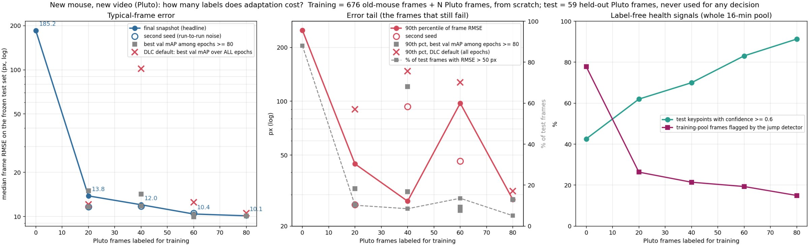
怎么看：左图（纵轴是对数刻度）：0 帧时误差 185 px，标 20 帧降到 13.8 px，之后 12.0、10.4、10.1 px。中图：最差的那部分帧，虚线是误差超过 50 px 的测试帧比例，从 88% 降到 5%。右图：两个不需要标注的指标，绿线（置信度 ≥ 0.6 的点的比例）从 42% 升到 91%，紫线（整段视频里被跳动规则标出的帧的比例）从 78% 降到 15%。How to read:Left (log y axis): 185 px at 0 labels, 13.8 px at 20 labels, then 12.0, 10.4, 10.1 px. Middle: the worst frames; the dashed line is the share of test frames with error above 50 px, falling from 88% to 5%. Right: two label-free signals; green (share of points with confidence ≥ 0.6) rises from 42% to 91%, purple (share of video frames flagged by the jump rule) falls from 78% to 15%.
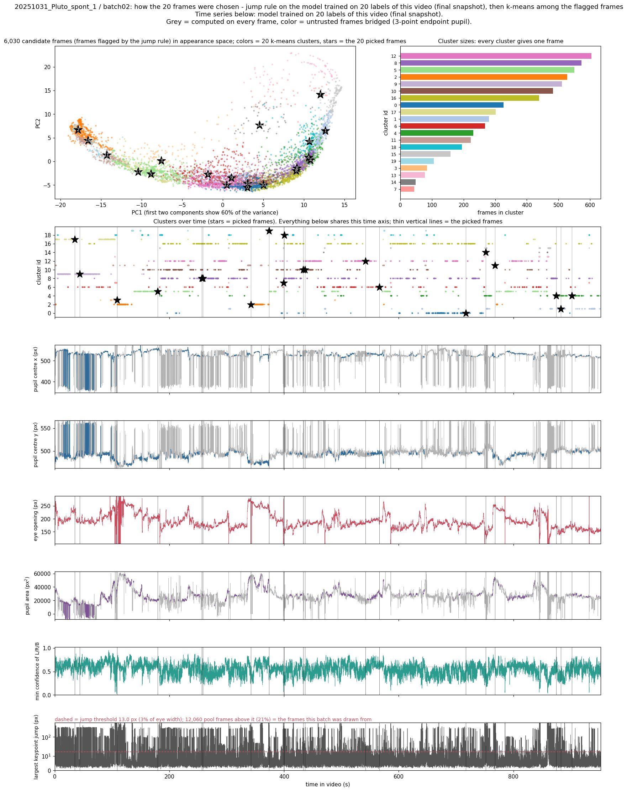
怎么看：一批 20 帧是怎么挑出来的（以第 2 批为例）。最下面一行：每一帧里关键点的最大跳动，红色虚线是阈值（眼宽的 3%），超过的帧是候选。最上面：候选帧按画面外观分成 20 类，每类挑一帧（星号）。中间：这 20 帧在时间上分散在整段视频里（竖线）。How to read:How one batch of 20 frames is chosen (batch 2 as the example). Bottom row: largest keypoint jump in every frame; the red dashed line is the threshold (3% of the eye width) and frames above it are candidates. Top: the candidates are clustered into 20 groups by appearance and one frame is taken from each (stars). Middle: the 20 picks are spread over the whole video (vertical lines).
Conclusion:A new mouse needs its own labels, but 20 of them bring the error from 185 px to about 14 px, and 80 to about 10 px. This was the first attempt, under the old label standard; the fuller comparison under the new standard (two changes of mouse) is in step 8.
7点位定义的明确（9 月 20 日起）：瞳孔按椭圆标，眼角取睑缘延长线的交点Keypoint definitions made explicit (from 2026-09-20): pupil as an ellipse, corners at the crossing of the eyelid margins
What was done:Where each of the 8 points is placed was written down, and all earlier videos were relabeled accordingly. From this step on every model and number uses these definitions. The full definitions, example figures and the common mistakes are in the folder keypoint_definitions/ of the repository.
Pupil top, bottom, left, right: the pupil is treated as an ellipse and the four points are the ends of its two axes. Parts hidden by the upper eyelid or by fur are completed with the ellipse, so the top point often lies under the eyelid. The pupil boundary is the outer edge of the darkened region; where the edge looks doubled the left contour is used (2026-09-26); the brighter band around the dark core counts as pupil (2026-09-29).
Upper and lower eyelid: the line between the eyelid skin and the eyeball is the eyelid margin. The upper-eyelid point is the midpoint of the upper margin, the lower-eyelid point the midpoint of the lower margin. Both are labeled during blinks too.
Left corner (nasal, medial canthus): the lower-left margin and the upper margin are each continued, and the corner is where the two continuations cross; the continuation follows the outer edge, the one without the shadow.
Right corner (temporal, lateral canthus): there are several bright reflections on this side. The lower margin is continued upwards along the outer line until it meets the upper margin; that point is the corner, and it lies to the right of the reflections. It is not placed on a reflection or on the inner line next to it.
怎么看：三只老鼠各一帧人工标注。红点是瞳孔的四个点，红线是过这四个点的椭圆；青色点是上下眼睑和两个眼角。图像为了看清做了提亮。How to read:One human-labeled frame of each of the three mice. Red dots are the four pupil points and the red line is the ellipse through them; cyan dots are the two eyelid points and the two corners. The frames are brightened for display.
怎么看：瞳孔四个点怎么来。红色椭圆盖住整个瞳孔，红色虚线是它的两条轴，四个点是轴的端点。黄色叉和黄色虚线是 9 月 20 日之前的标法：沿着看得见的瞳孔边缘标，上点停在眼睑边上。How to read:How the four pupil points are obtained. The red ellipse covers the whole pupil, the dashed red lines are its two axes, and the four points are the ends of the axes. Yellow crosses and the dashed yellow outline show the placement before 2026-09-20: along the visible pupil edge, with the top point stopping at the eyelid.
怎么看：两个眼角怎么来，画法照 9 月 20 日讨论时的手绘图。红色实线是沿图像描出的睑缘，红色虚线是它的延长线，红圈是交点，也就是眼角；青色点是实际标注的位置。黄色叉是当天第一次的标法，也是容易标错的位置：左边标在深色部分结束的地方，右边标在紧挨反光的内层线上。How to read:How the two corners are obtained, drawn after the hand sketch used in the discussion of 2026-09-20. Solid red = eyelid margin traced on the image, dashed red = its continuation, red circle = the crossing, which is the corner; cyan = the labeled point. Yellow crosses are the first placement of that day and the easy mistake: on the left, where the dark part ends; on the right, on the inner line next to the reflection.
The numbers for the four pupil points come from 40 frames of Pluto 2025-10-31 (old placement vs ellipse placement); those for the corners and eyelids from 90 frames of the 5-minute video (first corner placement of that day vs the final one). The 2026-09-26 convention (left contour) moved pupil points by a few pixels only; the 2026-09-29 decision on the bright band changed no labels.
Conclusion:The definition that really changed is pupil top; for the other points the placement was made explicit, and the two corners moved the most. The four eyelid and corner points only serve to detect blinks, so a stable position that can be found in every frame is preferred. Model and batch size are carried over from steps 1 and 2 (ResNet-50, batch 2): where the points are placed changed, the images and the training procedure did not, so they were not compared again. Error numbers of steps 1–6 cannot be compared directly with those from step 8 on.
8主线：每个新视频要标多少帧Main line: labels needed per new video
基本信息Basic information
视频Video
视频 0：第一只老鼠的 5 分钟视频。视频 1–10：Pluto 的 19.9 分钟视频。视频 11 起：Terra 的 19.9 分钟视频。都是 60 帧/秒。Video 0: the 5-minute video of the first mouse. Videos 1–10: 19.9-minute videos of Pluto. From video 11: 19.9-minute videos of Terra. All at 60 fps.
标注标准Label standard
第二阶段（第 7 步的定义）。Phase 2 (the definitions of step 7).
训练数据Training data
之前各视频带入的标注（见下表）加上这个视频自己的标注。自己的标注从视频前 80% 里挑：第一批 20 帧按画面外观聚类，之后每批 20 帧从跳动大的帧里聚类；每批先由模型预标，人再逐帧改正。The labels carried from earlier videos (table below) plus this video's own labels. Its own labels are picked from the first 80% of the video: the first 20 by clustering image appearance, each later batch of 20 by clustering among the frames with large jumps; the model pre-labels each batch and a person corrects every frame.
验证数据Validation data
视频第 80%–90% 的部分里取 20 帧，与前后各隔 2 秒。20 frames from the part between 80% and 90% of the video, with 2-second guards on both sides.
测试数据Test data
视频最后 10% 里按时间均匀取 50 帧，人工标注后冻结。只用来报告成绩。50 frames evenly spaced in time over the final 10% of the video, labeled by hand and frozen. Used only to report the score.
模型和配置Model and settings
ResNet-50，batch 2，120 轮，学习率在第 96、114 轮下降，MPS 训练，CPU 打分。每一步都从 ImageNet 预训练权重重新训练，只训练一次。成绩取最后一轮（第 120 轮）的存档。ResNet-50, batch 2, 120 epochs, learning rate drops at epochs 96 and 114, trained on MPS, scored on CPU. Every step is trained anew from ImageNet-pretrained weights, a single run. The final snapshot (epoch 120) is scored.
指标Metric
该视频 50 帧测试帧上的中位帧 RMSE（8 个点）。Median frame RMSE (8 points) on the 50 test frames of that video.
What was done:Videos are added one at a time: video 0 is the 5-minute video of the first mouse, videos 1–10 are 20-minute videos of Pluto, one recording day each, going back from 2025-10-31 to 10-22 (videos 1, 2, 3 are the same day); from video 11 on the videos are of a third mouse, Terra, again one day each, going back from 2025-10-17. Every video follows the same steps:
50 frames evenly spaced over the final 10% of the video become the test set; they are labeled and frozen.
The previous model is applied unchanged to get the "0 labels" error.
Each step adds 20 labels of this video (picked as in step 6; the model pre-labels each batch and a person corrects every frame), retrains together with the labels carried from earlier videos, and scores on the test set.
Plateau rule: stop when two consecutive steps each fail to improve the best error by more than 3%. The plateau point is the last step that did improve it.
The next video starts, carrying only this video's labels up to the plateau point. This mirrors real use, where labeling stops at the plateau.
怎么看：左图：每个视频到平台时用了多少帧自己的标注。视频 0 用了 60 帧，视频 1（新老鼠的第一个视频）20 帧，之后大多是 20 帧，视频 7 是 0 帧，视频 9 是 80 帧；斜线柱是还在进行中的视频。右图：灰色虚线是 0 帧时的误差（上一个模型直接用），红线是到平台时的误差。两条线之间的距离就是这个视频自己的标注带来的改善。视频 1 的 0 帧误差是 208 px（超出图的范围），因为换了老鼠。How to read:Left: how many of its own labels each video used at its plateau. Video 0 used 60, video 1 (first video of the new mouse) 20, most later videos 20, video 7 none, video 9 80; the hatched bar is the video still in progress. Right: the grey dashed line is the error at 0 labels (previous model unchanged), the red line the error at the plateau. The gap between them is what the video's own labels bought. Video 1 starts at 208 px (off scale) because the mouse changed.
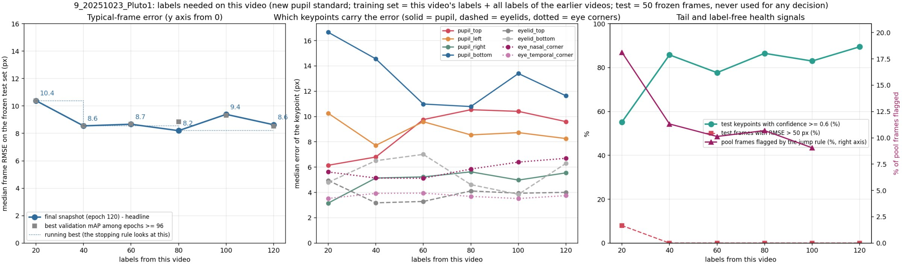
怎么看：单个视频的例子（视频 9）。左图：横轴是这个视频自己的标注帧数，纵轴是误差；20 帧 10.4 px，40 帧 8.6 px，80 帧 8.2 px，之后两步（9.4、8.6 px）都没有再改善，规则在 120 帧触发，平台点记为 80 帧。中图：8 个点各自的误差，瞳孔下点（蓝）最难。右图：不需要标注的指标，紫线是整段视频里被跳动规则标出的帧的比例，随标注增加从 18% 降到 9%。How to read:One video as an example (video 9). Left: x = this video's own labels, y = error; 10.4 px at 20 labels, 8.6 px at 40, 8.2 px at 80, then two steps without a gain (9.4, 8.6 px), so the rule fired at 120 and the plateau point is 80. Middle: error of each of the 8 points; pupil bottom (blue) is the hardest. Right: label-free signals; the purple line is the share of video frames flagged by the jump rule, falling from 18% to 9% as labels are added.
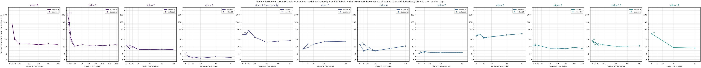
怎么看：全部视频各自的曲线并排放在一起（图很宽，可以左右拖动）。每个小图的横轴是该视频自己的标注帧数，纵轴是误差（对数刻度，各图相同）。0–10 帧之间的点是第 9 步的 5 帧、10 帧实验。How to read:Every video's own curve side by side (the figure is wide; scroll sideways). In each panel x = that video's own labels and y = error (log scale, same in all panels). The points between 0 and 10 labels are the 5- and 10-label runs of step 9.
每个视频的完整数字（由结果表自动生成）：
The full numbers of every video (generated from the result tables):
Videos 0–3 carry all labels that existed when the next video started (320 in total), more than their plateau points (120 in total). From video 4 on only the labels up to the plateau point are carried. These 320 labels are the same in the training set of every later model, so comparisons between later videos are not affected.
Video 4 has poor image quality; the pupil edge is hard to see even by eye, so its error is not comparable with the other videos.
Video 5: the median error at 0 labels is already low, but 12% of test frames are off by more than 50 px; 20 labels remove all of them, so the plateau point is recorded as 20.
Video 8 stays above 25 px at every step with 12–16% of test frames above 50 px; the cause is not known yet.
Conclusion:The starting point on a new mouse is improving: 208 px at 0 labels on the second mouse (the model had seen one mouse and 100 labels), 26 px on the third (two mice and 540 labels); on the third mouse, however, neighbouring models score between 17 and 33 px at 0 labels, so a single number is not stable. The first video of a new mouse needs 20 labels; later videos of the same mouse mostly reach the plateau with 20, at least 0 and at most 80. The error at the plateau is mostly between 3 and 16 px (video 8 excepted).
9只标 5 帧或 10 帧够不够：多数视频不够Are 5 or 10 labels enough: not on most videos
基本信息Basic information
视频Video
与第 8 步相同的各个视频。The same videos as in step 8.
标注标准Label standard
第二阶段（第 7 步的定义）。Phase 2 (the definitions of step 7).
训练数据Training data
与该视频第 1 步的训练集相同，只是该视频自己的 20 帧换成其中的 5 帧或 10 帧。子集按画面外观挑（把第一批的 20 个聚类合并成 5 组或 10 组，每组取一帧），不依赖任何模型；每种大小取两组（a、b）。The training set of that video's step 1, with the video's own 20 labels replaced by 5 or 10 of them. The subsets are picked by image appearance (the 20 clusters of the first batch are merged into 5 or 10 groups and one frame is taken from each) and depend on no model; two subsets (a, b) per size.
测试数据Test data
与第 8 步相同：该视频的 50 帧测试帧。Same as step 8: the 50 test frames of that video.
What was done:Each video's first batch has 20 labels. 5 or 10 of them were taken (two different subsets each, a and b), everything else exactly as in that video's step 1, then retrained and scored. No new labeling is needed.
Median frame RMSE in px. "–" = no such point or not trained yet. The runs for video 6 onward are added whenever the main line is idle.
怎么看：视频 1（新老鼠的第一个视频）。蓝线是正常的 0、20、40… 帧，橙色点是 5 帧和 10 帧的两组。左图：0 帧 208 px，5 帧 96 / 41 px，10 帧 20 / 16 px，20 帧 10.4 px，标注越多越好，5 帧和 10 帧都不够。How to read:Video 1 (first video of the new mouse). The blue line is the regular 0, 20, 40… steps; orange markers are the two subsets at 5 and 10 labels. Left: 208 px at 0, 96 / 41 px at 5, 20 / 16 px at 10, 10.4 px at 20: more labels are better and neither 5 nor 10 is enough.
怎么看：视频 5（之前的视频已经覆盖得比较好）。左图：中位误差在 0–20 帧之间都是 9–16 px，差别不大。右图：误差超过 50 px 的测试帧，0 帧时有 12%，5 帧时已降到 0–4%。在这种视频上 5 帧就够去掉大部分严重错误。How to read:Video 5 (already well covered by the earlier videos). Left: the median error is 9–16 px anywhere between 0 and 20 labels, with little difference. Right: test frames off by more than 50 px, 12% at 0 labels and already 0–4% at 5. On such a video 5 labels remove most gross failures.
Conclusion:5 labels are enough only where the earlier videos already cover the new one well (videos 3 and 5). The first video of a new mouse improves steadily with labels, and 5 or 10 are clearly worse than 20. On video 4, 10 labels are worse than none (both subsets agree; not explained). 20 is the smallest batch that worked on every video.
10加入新视频会不会让旧视频变差：不会Do new videos hurt old ones: no
基本信息Basic information
视频Video
第 8 步的全部视频。All videos of step 8.
标注标准Label standard
第二阶段（第 7 步的定义）。Phase 2 (the definitions of step 7).
数据Data
第 8、9 步训练出的每一个模型（最后一轮的存档），在每一个视频的 50 帧测试帧上打分。没有新的训练，也没有新的标注。Every model trained in steps 8 and 9 (final snapshot) is scored on the 50 test frames of every video. No new training and no new labels.
指标Metric
与第 8 步相同：中位帧 RMSE。Same as step 8: median frame RMSE.
做了什么：把这条线上训练过的每一个模型，拿到每一个视频的测试集上打分（回测）。
What was done:Every model trained along the sequence was scored on the test set of every video (back-test).
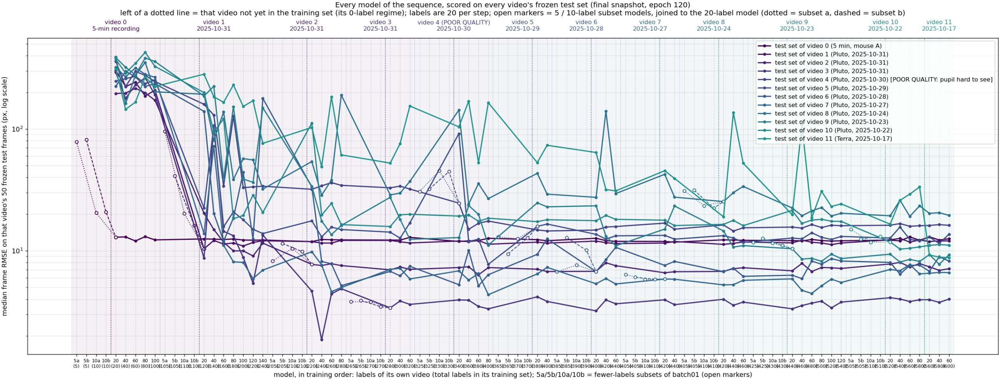
怎么看：横轴是模型，按训练的先后排列，顶上标着当时正在加哪个视频的标注；每条线是一个视频的测试集；纵轴是误差（对数刻度）。一个视频的竖虚线左边，是它自己的标注还没有进入训练集的阶段。看三点：（1）最左边一段只有第一只老鼠的标注，Pluto 的所有视频误差都在 170–350 px；视频 1 的标注一加入，全部降到几十 px 以下。（2）每条线过了自己的竖虚线之后基本是平的：后面再加别的视频，它不变差。（3）空心点是第 9 步的 5 帧、10 帧模型。图很宽，可以左右拖动。How to read:x = models in training order, with the video being added named on top; one line per video's test set; y = error (log scale). Left of a video's dotted line its own labels are not yet in the training set. Three things to see: (1) at the far left only labels of the first mouse exist and every Pluto video is at 170–350 px; as soon as video 1's labels enter, all drop below a few tens of px. (2) After its own dotted line each line is essentially flat: adding other videos later does not make it worse. (3) Open markers are the 5- and 10-label models of step 9. The figure is wide; scroll sideways.
怎么看：同样的数据用表格显示：行是测试视频，列是模型，格子里是误差 (px)，颜色越黄越好、越紫越差。左边一片紫色是只有第一只老鼠标注的模型；往右每一行颜色稳定，没有重新变紫。How to read:The same data as a table: rows = test videos, columns = models, cells = error (px); yellow is good, purple is bad. The purple block on the left is the models with labels of the first mouse only; to the right each row keeps its colour and never turns purple again.
Conclusion:One model can keep accumulating videos without hurting the old ones. Videos of the same day transfer directly (video 3 was at 4.4 px before any of its own labels); a new day needs its 0-label error checked before deciding how much to label. A 0-label score from a single model is not reliable; individual models can be far off.
11瞳孔面积和眨眼（新标注标准）Pupil area and blinks (new label standard)
基本信息Basic information
视频Video
视频 0–7（面积）和视频 0–4（眨眼）。Videos 0–7 (area) and videos 0–4 (blinks).
标注标准Label standard
第二阶段（第 7 步的定义）。Phase 2 (the definitions of step 7).
数据Data
各视频的测试帧。真值是人工标注的四个瞳孔点算出的椭圆面积；模型一侧用每个视频最后训练的模型的预测。眨眼部分用人工判断为闭眼的 16 帧和睁眼的 687 帧。The test frames of each video. Truth is the ellipse area from the four human pupil points; on the model side, the predictions of the last model trained on each video. The blink part uses 16 frames a person judged as eye-closed and 687 judged as open.
指标Metric
面积误差的中位数（%）；区分闭眼帧和睁眼帧的 AUC。Median area error (%); AUC for separating closed-eye from open-eye frames.
What was done:With the ellipse label standard the area rules were compared again: the 3-point rule (step 5), the 4-point rule (width × top-to-bottom height) and several "drop one point" variants. Truth = the 4-point ellipse area from the human labels. The current blink rule was also checked on several videos: which signal best separates the frames a person marked as eye-closed.
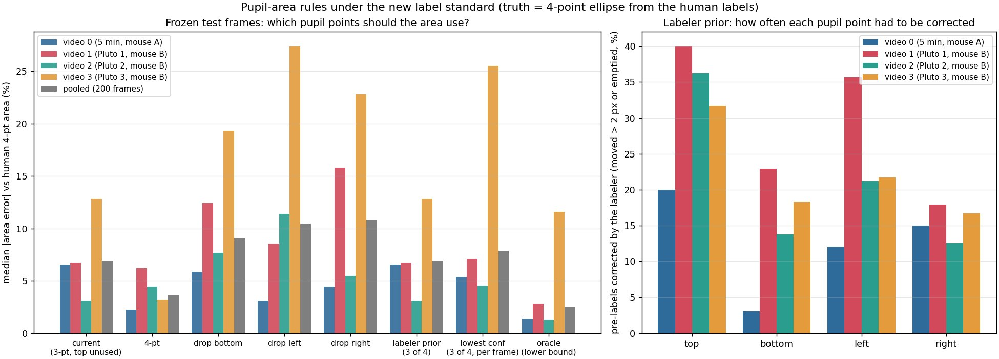
怎么看：左图：每组柱子是一种算法，纵轴是面积误差（%，越低越好），灰柱是 4 个视频合在一起。四点法 3.7%，现行三点法 6.9%；去掉任何一个点都更差（9–11%）；按模型置信度每帧去掉一个点是 7.9%，也不如四点法。右图：人工改正预标时，四个瞳孔点各被改了多少次，上点被改得最多（20–40%）。How to read:Left: one group of bars per rule, y = area error (%, lower is better), grey = the four videos pooled. 4-point 3.7%, current 3-point 6.9%; dropping any point is worse (9–11%); dropping the lowest-confidence point per frame gives 7.9%, also worse than 4-point. Right: how often the labeler corrected each pupil point in the pre-labels; the top point most often (20–40%).
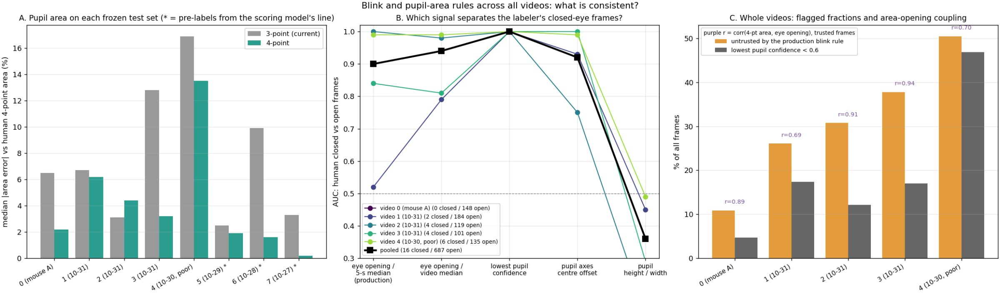
怎么看：A：8 个视频的测试集上，四点法（绿）在 7 个上比三点法（灰）误差低。B：五种信号区分“闭眼帧”和“睁眼帧”的能力（AUC，1 = 完全分开，0.5 = 随机）；黑线是合并结果，“瞳孔点最低置信度”达到 1.0，现行规则用的“睁开高度 / 5 秒中位数”是 0.90。C：现行眨眼规则（橙）在 Pluto 的视频上把 26–50% 的帧标为不可信，远多于真实的眨眼。How to read:A: on the test sets of 8 videos the 4-point rule (green) has the lower error on 7. B: how well five signals separate eye-closed from eye-open frames (AUC, 1 = perfect, 0.5 = chance); the black line is pooled, "lowest pupil confidence" reaches 1.0 and the signal used by the current rule ("opening / 5-s median") 0.90. C: the current blink rule (orange) marks 26–50% of the frames of the Pluto videos as untrusted, far more than real blinks.
Conclusion:Under the new standard the 4-point area error is about half that of the 3-point rule (3.7% vs 6.9%), so switching is recommended; the production area script still uses the 3-point rule until that is approved. The current blink rule was tuned on video 0, flags far too much on the new mouse, and needs to be redesigned. Panel B rests on only 16 human-marked closed-eye frames.
The plateau rule works at the noise floor: With 50 test frames, retraining the same setting moves the median by about 0.5–1 px, while 3% is about 0.3 px. Each video's plateau point therefore carries an uncertainty of roughly ±20 labels. Every point is a single training run.
Anchoring by pre-labels: Test sets are made by correcting a model's pre-labels, so the model that made them looks better than it is on that test set (clearest on videos 5 and 6).
How well the jump rule finds wrong frames has not been measured: how many flagged frames are really wrong, and how many wrong frames it misses.
Video 8 stays above 25 px for an unknown reason. Video 4 has poor image quality.
The third mouse (Terra, videos 11–18) has just started with its first video (numbers in the table of step 8); until it is finished, "a new mouse needs 20 labels" rests on one new mouse.
Area and blinks: the switch to the 4-point rule and the redesign of the blink rule are undecided.
Where things are: Code, documentation, result tables and figures are in the GitHub repository: steps 1–6 under v1_old_pupil_top/, steps 7–11 under v2_new_pupil_top_video_scaling/ (one folder per video, cross-video results in results/). Every important state has a git tag, listed in CHANGELOG.md. Raw videos, labels, model weights and per-frame predictions are kept locally and on the backup drive only. The figures on this page are the original figures of the results/ folders.